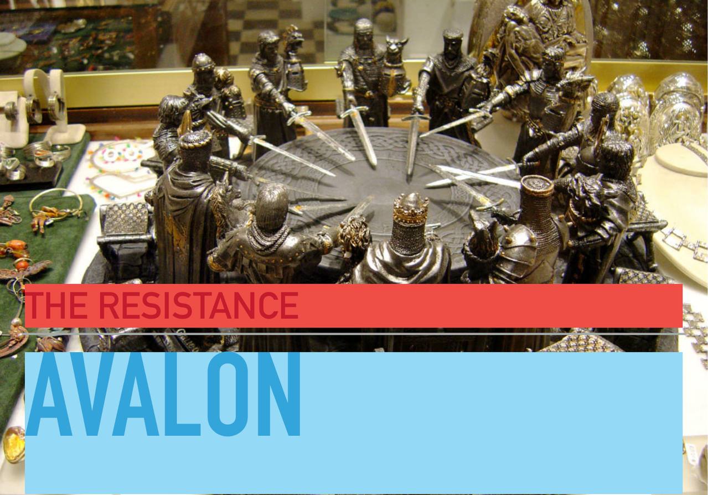
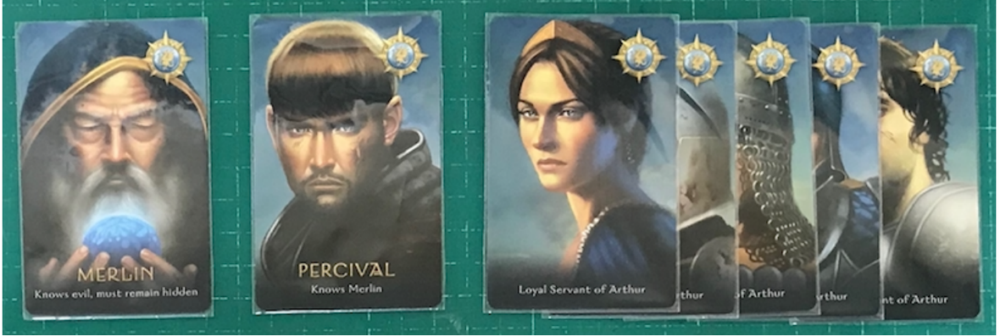
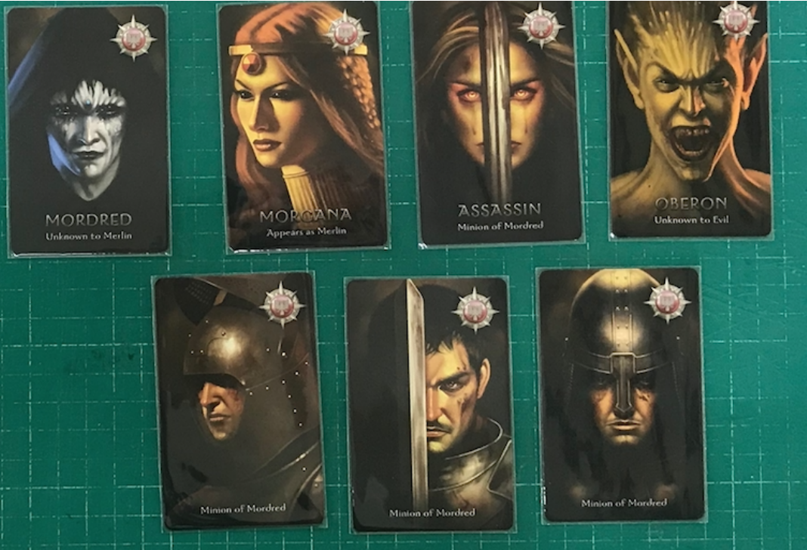
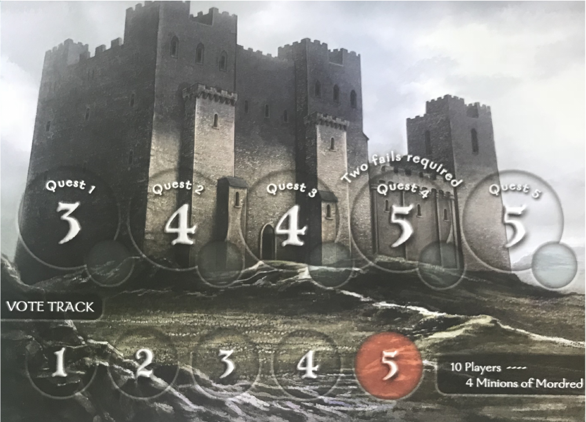
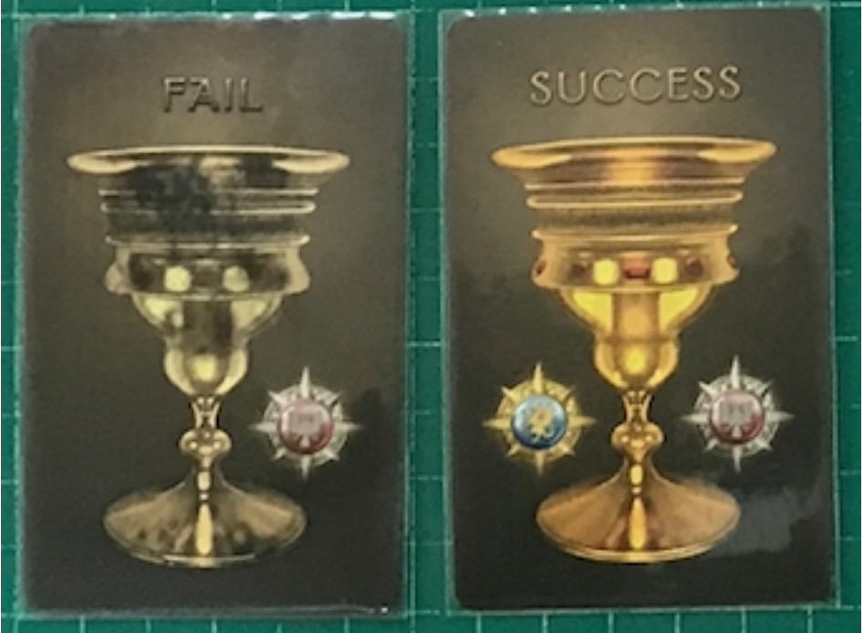
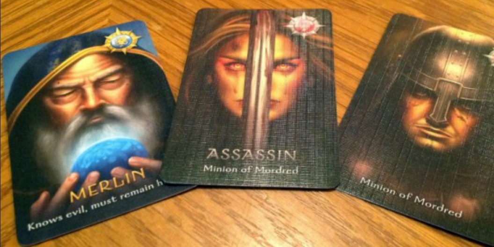

Hidden Roles · Trust · Group Decision
Avalon กับข้อมูลลับ
วันนี้เราไม่ได้ดูแค่ว่าใครโกหกเก่ง แต่ดูว่าโต๊ะทั้งโต๊ะสร้างความเชื่อใจจากข้อมูลที่ไม่เท่ากันอย่างไร

เป้าหมายของคาบ
เล่นให้เป็น แล้วอ่านเกมให้ออก
แยก Leader, โหวตทีม, ส่งภารกิจ และช่วง Assassin ออกจากกันให้ได้
ใครรู้อะไรจริง ใครแค่พูดให้คนอื่นเชื่อ และหลักฐานไหนตรวจกลับได้
เสียงโหวตไม่ได้บอกความจริงทั้งหมด แต่ทิ้งร่องรอยให้เราคุยต่อได้
ตาราง 3 ชั่วโมง
ใช้เกมจริงเป็นห้องทดลอง
ทวนวิธีเล่นและตั้งเกม
สาธิต 1 ภารกิจหน้าห้อง
เล่นรอบแรกแบบช่วยกันอ่านบอร์ด
เล่นรอบสองพร้อมสังเกตรูปแบบการโหวต
อภิปรายหลังเล่นและทำใบงาน
กติกาแกนกลาง
ฝ่ายดีต้องผ่าน 3 Quest
ฝ่ายร้ายพยายามทำให้ Quest ล้มเหลว หรือปล่อยให้ฝ่ายดีชนะ 3 Quest แล้วค่อยให้ Assassin ทาย Merlin ให้ถูก
ต้องหาทีมที่ไว้ใจได้ ส่งภารกิจให้สำเร็จ 3 ครั้ง และปกป้อง Merlin
รู้กันเองเป็นส่วนใหญ่ พยายามปะปนในทีม ทำ Quest fail และตามหา Merlin
ชนะบนบอร์ดอย่างเดียวอาจยังไม่จบ ถ้า Merlin ถูกทาย ฝ่ายร้ายพลิกชนะได้
Leader, Approve, Reject, Success, Fail ใช้ตามคำบนอุปกรณ์จริงได้เลย
ตั้งเกมให้ไว
ก่อนเล่นรอบแรก ต้องพร้อม 5 อย่าง
เลือกจำนวนผู้เล่น แล้วหยิบการ์ดฝ่ายดี/ฝ่ายร้ายตามตาราง
เกมแรกใช้ Merlin + Assassin พอ บทบาทเสริมเก็บไว้รอบหลัง
แจกการ์ดบทบาทลับ แจก Approve/Reject และวางบอร์ด Quest
เลือก Leader คนแรก แล้วเตรียมอ่านสคริปต์ช่วงหลับตา


ช่วงหลับตา
ใครรู้อะไรตั้งแต่ต้น?
ตื่นมาเห็นกันเอง จึงมีข้อมูลมากกว่าคนทั่วไปตั้งแต่เริ่ม
รู้ว่าฝ่ายร้ายคือใคร แต่พูดตรงเกินไปไม่ได้ เพราะจะโดน Assassin จับ
ไม่รู้อะไรพิเศษ ต้องฟังเหตุผล ดูผล Quest และอ่านเสียงโหวต
หนึ่ง Quest วนแบบนี้
เสนอทีม → โหวตทีม → ส่งภารกิจ → อ่านผล
เลือกคนเข้าทีมตามจำนวนบนบอร์ด
ทุกคนโหวต Approve หรือ Reject ทีมนี้
เฉพาะคนในทีมส่ง Success/Fail แบบลับ
เปิดผลว่า Quest สำเร็จหรือล้มเหลว
ใช้ผลและเสียงโหวตย้อนอ่านความน่าเชื่อถือ
อ่านบอร์ด
บอร์ดบอกว่าทีมต้องมีกี่คน
ก่อนเสนอทีม ให้ดูแถวจำนวนผู้เล่นและช่อง Quest ปัจจุบันเสมอ เพราะแต่ละ Quest ใช้จำนวนคนไม่เท่ากัน

Vote Pattern
เสียงโหวตคือข้อมูล แต่ไม่ใช่คำตอบสำเร็จรูป

Quest Result
Success / Fail เป็นหลักฐานที่แรงกว่าคำพูด
บอกว่าภารกิจผ่าน แต่ไม่ได้พิสูจน์ว่าทุกคนในทีมเป็นฝ่ายดี
บอกว่าทีมมีปัญหา แต่ไม่ได้บอกทันทีว่าใครเป็นฝ่ายร้าย
Credible Communication
คำพูดแบบไหนน่าเชื่อขึ้น?
อ้างถึงทีมที่เคยลง Quest ผลที่ออก หรือเสียงโหวตที่ทุกคนเห็นร่วมกัน
พูดแล้วตัวเองเสี่ยงถูกจับตา ไม่ใช่แค่พูดเอาตัวรอดลอย ๆ
คนอื่นย้อนดูข้อมูลบนโต๊ะแล้วคุยต่อได้ ไม่ใช่ความรู้สึกอย่างเดียว
- Hidden information = มีข้อมูลที่ซ่อนอยู่
- Asymmetric information = รู้ไม่เท่ากัน
- Cheap talk = คำพูดที่ยังไม่มีต้นทุน
- Credible communication = คำพูดที่มีเหตุผลให้เชื่อมากขึ้น
Merlin Problem
รู้มากเกินไปก็อันตราย
Merlin มีข้อมูลดีมาก แต่ถ้าชี้ชัดเกินไป ฝ่ายร้ายอาจจับได้ว่าใครคือ Merlin แล้ว Assassin พลิกเกมตอนท้าย

Activity
ภารกิจระหว่างเล่นรอบสอง
ดูว่าใครเสนอทีม ใคร Approve และผล Quest เป็นอย่างไร
น่าเชื่อเพราะอะไร มีหลักฐานหรือต้นทุนอะไรประกอบไหม
เสียงโหวต ผล Quest หรือคำพูดใดทำให้ความเชื่อใจเปลี่ยน
Debrief Map
แยกคำอ้างออกจากหลักฐาน
ส่งท้ายคาบ
ใบงานหลังเล่น
ข้อมูลที่รู้จริง คำพูดที่เชื่อหรือไม่เชื่อ รูปแบบการโหวต ผลภารกิจ และจังหวะที่เปลี่ยนใจ
ไม่ต้องเขียนยาว แต่ต้องเห็นว่าเชื่อมประสบการณ์เล่นกับเรื่องข้อมูลลับและความน่าเชื่อถือได้
เปิดใบงาน: /observations/week6-avalon/
References
แหล่งตรวจสอบกติกา
อ้างแนวคิดข้อมูลลับ ความไม่แน่นอน คำพูดที่เชื่อได้ และการตัดสินใจเป็นกลุ่มจากบทต้น ๆ ของรายวิชา